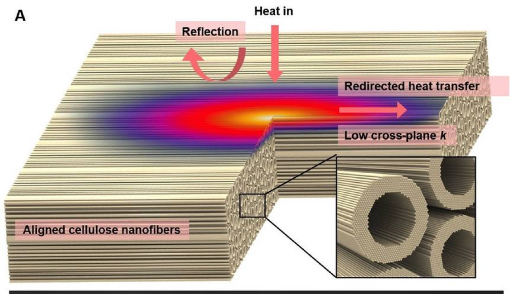
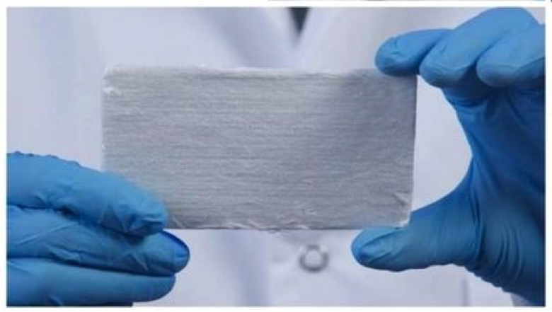
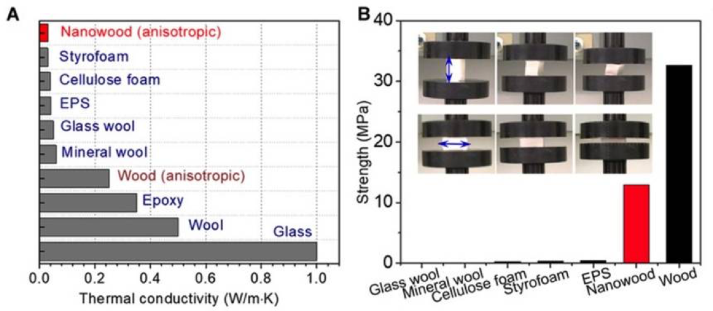

This week’s look at innovation is focused on another highly innovative technology development coming from researchers at the University of Maryland in the form of processed wood insulation. This innovative development is based on the wood processing technology described in Blog Column 4, wherein the process for forming Nanowood is relatively simple, starting with boiling wood in a bath of sodium hydroxide and sodium sulfite and then treating it with hydrogen peroxide followed by freeze-drying the pure cellulose. This relatively simple, low cost, processing results a highly aligned cellulose structure that has highly anisotropic thermal conductivity.
 The Nanowood still retains the tubular structure of the pre-processed wood so that it has very low thermal conductivity across the grain. With a thermal conductivity of 0.03 W/M-K it is about as insulating as plastic foams but has much higher strength. While the Nanowood is only one third strong as the original wood it is made from, it is strong enough to be used as an insulation structural material in lightly loaded applications. It is reported to be relatively cheap at $7.44 per square meter.
A more detailed technical report can be found here.
The underlying processes developed at the University of Maryland has enabled a series of wood based developments that are in themselves innovative and could well be paradigm changers.
What do you think?